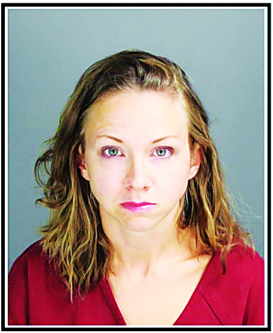

Kathleen Boozer #155 sentenced
| State | Michigan | Court | Oakland County Circuit Court |
| Judge | unknown | Incident Date | 2014-09-01 |
| Defendant Age | 28 | Victim Age | 16 |
| Prison Sentence | 1.0 yr |
Former Spanish teacher at Lake Orion High School, Lake Orion, Oakland County MI. Also identified as Kathleen Veronica Boozer. Age 28 at start of offense; approximately 36 at sentencing. Ongoing sexual relationship with 16yo male junior student Ryan Crue (later went public by name) beginning fall 2014, involving more than 100 instances of sexual intercourse. Some acts occurred in her classroom after she covered the windows. Relationship continued through his junior year.
Victim broke public silence in December 2020 media reports, prompting charges. Arrested approximately December 2020; arraigned March 26, 2021. Pleaded no contest August 2022 to two counts of third-degree criminal sexual conduct (two other counts dropped as part of deal; originally faced up to 15 years per count). Sentenced August 2, 2022 to one year in jail, lifetime sex offender registration, and sex offender treatment.
NOTE: Delayed reporting — approximately 6 years elapsed between start of offenses (fall 2014) and charges (late 2020), triggered by victim going public. Over 100 alleged sexual encounters is among the highest frequency documented in this DB. On-campus conduct (classroom with covered windows) in addition to off-campus. Plea deal and one-year jail term drew criticism for leniency given scope of allegations. Victim (Ryan Crue) publicly identified himself — unusual in teacher sex cases.
grooming plea sex-offender-registration delayed-reporting charge-reduction long-term-relationship on-campus
People
| Name | Role | Notes |
|---|---|---|
| Boozer, Kathleen | defendant |
Related Cases
- Christy A. Wilson 78% — delayed-reporting, grooming, long-term-relationship · penetrative · victim age 14 · 1.5 yr sentence
- Andrea Berbel 77% — grooming, long-term-relationship, on-campus · penetrative · victim age 16
- Bridgett Szychulski 72% — grooming, long-term-relationship, on-campus · penetrative · victim age 14 · 0.96 yr sentence
- Valeria Ashley Costadoni 71% — grooming, long-term-relationship, on-campus · victim age 17 · 1.0 yr sentence
- Elizabeth Dillett 71% — grooming, long-term-relationship, on-campus · penetrative · victim age 16 · 2.0 yr sentence
Charges
| # | Description | Count | Severity | Status |
|---|---|---|---|---|
| 358 | Criminal sexual conduct, third degree | 2 | — | plea |
| 359 | Criminal sexual conduct (additional counts) | 2 | — | dismissed |
Timeline
| Date | Type | Description |
|---|---|---|
| 2020-12-01 | arrest | Arrested (approximate December 2020) after victim Ryan Crue went public. |
| 2021-03-26 | arraignment | First court appearance/arraignment. |
| 2022-08-01 | other | Pleaded no contest to two counts of third-degree criminal sexual conduct; two additional counts dismissed. |
| 2022-08-02 | sentencing | Sentenced to one year in jail, lifetime sex offender registration, and sex offender treatment. |
Entries (1)
| # | Date | Source | Preview | Tags |
|---|---|---|---|---|
| 172 | 2022-08-02 | FOX 2 Detroit / MLive / The US Sun / Lake Orion Review / Patch | Kathleen "Kate" Boozer (also Kathleen Veronica Boozer), former Spanish teacher at Lake Orion High Sc… | grooming plea sex-offender-registration delayed-reporting charge-reduction long-term-relationship on-campus |